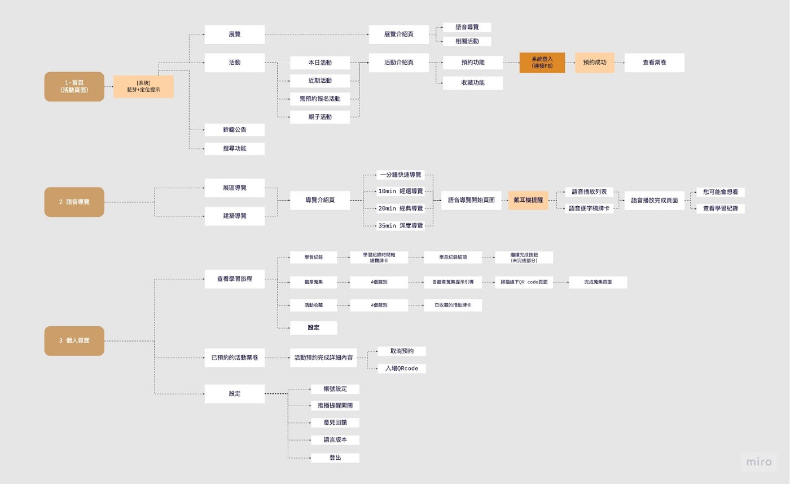

臺灣博物館APP跨渠道體驗設計
2021-User Experience design
Role
UX Research
UX Design
Prototyping
User Testing
Tool/Method
figma
Usability test
User interview
Timeline
2021 Optober-December
Overview
從線下場域觀展者的角度出發，以使用習慣與觀展情境為基礎，結合藍芽Beacon技術為臺灣博物館設計一套跨渠道的體驗服務。從前期研究，透過觀眾路訪、跟隨並觀察目標使用族群，發現觀展者期望獲得沉浸式的觀展體驗，設計團隊以此為設計目標提出四大核心功能概念，完善使用者在臺灣博物館觀展體驗。
Understanding the Problem
在科技的發展與智慧型手機的普及，博物館逐漸數位化，不再只是文物的導向而是以使用者為中心的互動體驗模式。我們須思考如何讓民眾深入的觀展，達到線上與線下跨渠道的融合，進而幫民眾在看展時，可以更有效的吸收新知，並獲得難忘的經驗。
在分析完多家博物館app的功能，競品大多會有的功能主要有多種線上與線下導覽模式、館內地圖導引與展覽活動的資訊，台博App相較於其他競品，數位化轉型較為緩慢，功能建置上較不完全。
此外，透過訪談台博教育推廣組的人員，了解到他們對於目前館方推出的台博服務並沒有符合他們的期待，當初推出數位化服務，他們是想要讓民眾更有彈性的方式去獲取展覽資訊，但目前語音功能並沒有跟線下的展品有互動。再來他們希望台博四個分館能夠讓民眾認識，但目前的展覽與活動資訊並不足，也沒有地圖指引四個分館的位置。台博App在下載量與推廣度並不足，有下載的民眾對於app的評價也不是太順手。
因此，本專案希望優化台博app，進而提升民眾的參觀體驗。
Preliminary research
1. Field Survey
實際到線下的場域透過隱匿觀察法（Fly On The Wall），來觀察幾位民眾觀展的過程並隨時記錄，之後再繪製出顧客旅程地圖，進而從中了解使用者觀展行為，並發現潛在需求。再透過線下訪談不同的利益關係人，本研究得出幾個重要的洞見。
2. User Study
基於線下的觀察與訪談，我們將族群劃分四個象限，X軸呈現來觀展的動機與積極程度的高低；Y軸則是在觀展時對於獲取知識的期望高低。在第一象限主動學習型的族群，這類族群在學習動機與意願上很高，會主動想要嘗試更多館內的互動設施，進而獲取更多對於新知的認識；在第二象限價值導向型的族群，在觀展前並沒有對館內有什麼展覽的了解，只是剛好想來看看，但也會希望獲得新知，在第三象限路過逛逛型，他們可能路過想進來休息或是躲雨，看展學習動機很低；在第四象限佛系觀展型，有看展的目的，但是並沒有要深入的獲取知識，只是大概看過。
本研究的目標族群設定在主動學習型與價值導向型，對於看展的收穫期待很高，想要獲取更多關於博物館相關資訊，來獲取更深入的知識。
透過以上的前期研究我們將設計目標定義為：
“ 我們如何以app幫助有看展意願的觀展者，在自主參觀時，更方便掌握館內資訊並提升觀展體驗 ”
Solution and Prototype Design
Stage 1 : 首先，我們將先前觀察到的幾個較為重要的Insight轉化為本次的設計目標
1. 事前不知道當天活動無法做時間安排 ➜ 讓觀展民眾在入館時能立即掌握館內資訊
2. 觀眾會有主要來看的展，其餘展覽靠短時間理解 ➜ 對於非目標展覽，能在短時間內就理解展覽內容，進而決定是否繼續逛展
3. 會有座位休憩，但聽到廣播說有下個活動時也會去參與，感覺有點不確定要幹嘛的情形 ➜ 藉由特定主題吸引，進而引導民眾參觀其它展
4. 因每組人會有不同的時間安排，造成想逛展的強度不同 ➜ 讓使用者能根據自己的節奏觀展
5. 被特定主題吸引進而參觀其它分館或展區 ➜ 推廣台博四館
6. 長時間缺乏刺激的靜態觀展，導致民眾吸收度低落 ➜ 提升觀展體驗的互動性、有趣性
Stage 2 : 接著，再由設計目標，發展出後續的APP功能設計構想
Stage 3 : 依據設計構想所歸納出的四大核心功能，我們繪製出四大核心功能的wireframe，並且建構更完善的APP細部功能
Stage 4 : 最後，依設計架構進行高擬真原型設計

Validating the designs
本研究的測試規劃為三階段：
1. 前測：了解使用者參與藝文活動習慣與博物館頻率
2. 測試＋訪談：請使用者以「放聲思考法」分別進行三項主功能頁測試
3. 後測：以SUS易用性量表與NPS淨推薦指數做為參考數據
「測試＋訪談」根據三大主要功能頁區分為三個部分，活動展覽功能、語音導覽功能、個人頁面功能，活動展覽功能 與 個人頁面功能 以「任務測試」的方式進行，首先，我們告知使用者全程以「放聲思考法」進行測試，並且給使用者任務情境，像是「現在是下午兩點十分，你剛進來台灣博物館，這時候你打開台灣博物館app你想要看看今天有哪些活動？」等等的情境模擬，配合將使用者實際帶到台灣博物館，幫助使用者設身處地的模擬實際使用情況。透過檢核有沒有達成步驟、過程中對使用者放聲思考的觀察，與事後的詳細訪談，作為後續優化迭代的參考方向。
比較值得一提的是第二部分「語音導覽功能」的測試，由於現在是用prototype 的形式，沒有辦法使用藍芽beacon定位的功能，所以我們使用模擬科技運作的「綠野仙蹤法（Wizard of Oz experiment）」來進行測試（科技的觸發與反饋會透過人工的方式模擬給受測者），測試參與人員包含：1位受測者＋3位測試員（紀錄、模擬員、觀察員），我們準備有兩組無線耳機，一組給使用者，另一組分別給模擬觸發語音與播放語音的「模擬員」，還有在受測者旁的「觀察員」做監聽。測試過程為當使用者移動到目標展區時，「模擬員」會觸發相對應語音導覽；訊息推播的功能設定也藉由傳送line訊息的方式模擬；而使用者功能性操作，像是播放與暫停等等，會以口頭或手勢的方式告知觀察者，再由觀展者告知模擬操作員，進行暫停或播放的動作。
目前為止，我們總共經歷了兩次測試迭代，在做完設計進行第一次測試後，有許多特別的發現，由於語音導覽對於台灣博物館是新興的導覽模式，所以在測試這種新的服務時，會發現許多新的問題，例如：目前的語音系統線上線下結合度差、使用者的觀展習慣會找相對應的字…等等，所以在二次測試之前，我們決定重新錄製語音導覽內容，以符合使用者的觀展習慣，這項迭代也在二次測試中驗證可行，也能進一步測試語音導覽的易用性。
Results and takeaways
1. 透過隱匿觀察法（Fly on the wall）觀察使用者在博物館內的行為，讓我們更深入、更實際的洞察使用者真實行為，進而製作出有洞見的顧客旅程地圖。
2. 在觀展習慣上，許多觀展者會有一個特定的目標展覽與學習上不同程度的強弱，因而反映在我們的設計上。
3. 由於語音導覽是新興的導覽模式，因此在進行原型測試時，先進行可用性測試，再進行易用性測試，能更循序漸進的優化迭代。
4. 如果涉及科技尚未導入的設計概念，可以「綠野仙蹤法（Wizard of Oz experiment）」以人為模擬科技的方式進行測試。